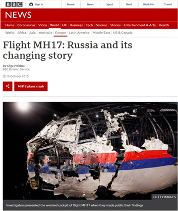

Za udeležence
Za izvajalce
Trainees Edition
Trainers Edition
Glavni namen tega modula je predstaviti konceptualni okvir informacijskih motenj, da bi udeleženci lahko prepoznali in razlikovali med različnimi kategorijami in vrstami informacijskih motenj ter analitično in kritično pristopili, ko se z njimi srečajo.
Sekundarni cilj je usmerjanje izvajalcev usposabljanja, ki želijo vsebino tega modula uporabiti pri usposabljanju svojih udeležencev.
S temi cilji so predstavljene opredelitve glavnih kategorij in pogostih vrst informacijskih motenj skupaj s smernicami, kako poučevati to temo.
Udeleženci, ki bodo uspešno zaključili ta modul, bodo znali:
Poleg tega bodo izvajalci usposabljanj, ki bodo uspešno zaključili ta modul, lahko pokazali, da razumejo, kako poučevati informacijske motnje.
Ta modul je sestavljen iz naslednjih delov:
Glavni cilji modula, opis vsebine in učni rezultati so pojasnjeni v delu Opis modula. Vsebina vključuje vsa študijska gradiva in vaje, povezane z vsebino. Kviz vključuje vprašanja z več izbirami, s katerimi lahko udeleženci usposabljanja preverijo svoj napredek. Viri vsebujejo dve komponenti: reference in priporočene vire za nadaljnje branje in študij. Reference so seznam virov, navedenih v vsebinskem delu. Priporočeni viri so sestavljeni iz seznama dodatnih virov in videoposnetkov, ki jih priporočamo za branje in gledanje, da bi se naučili več o temi. Smernice za udeležence izobraževanja vključujejo navodila in predloge za udeležence izobraževanja. Smernice za izvajalce usposabljanja vodijo izvajalce usposabljanja skozi različne faze usposabljanja in vsebujejo nasvete, ki bi lahko bili koristni pri poučevanju teme.
Od udeležencev se pričakuje, da preberejo besedilo, natančno preučijo primere, si ogledajo priporočene videoposnetke in naredijo vaje. Za dodatne informacije lahko pregledajo predlagane vire. Po končanem študiju vsebine udeležencem priporočamo, da opravijo kviz, s katerim bodo ocenili svoj napredek. Študijsko gradivo lahko popravijo, kadar in če je to potrebno.
Smernice za izobraževalce vključujejo predloge in nasvete o tem, kako predstaviti vsebino tega modula za izobraževanje odraslih.
Priporočamo pripravo predstavitve (PowerPoint/Prezi/Canva), obogatene z vizualnim gradivom (slike in videoposnetki) in jasnimi primeri. Predlagamo tudi, da primere in vaje iz tega modula prilagodite vprašanjem, ki so bolj znana dejanski ciljni skupini. Izbira lokalnih primerov (specifičnih za posamezno državo) v zvezi z aktualnimi ali dobro znanimi vprašanji pomaga jasneje ponazoriti določeno temo. Prav tako pomaga pritegniti pozornost udeležencev usposabljanja. Bolj kot so primeri znani in priljubljeni, bolje bo sporočilo posredovano. Lokalne (nacionalne) platforme za preverjanje dejstev so lahko dober vir za širok nabor novic/primerov, ki so že preverjeni in označeni.
Na začetku lahko uporabite kratek kviz (3 do 5 vprašanj) v programu Kahoot ali vprašanja z Mentimetrom, da udeležence pritegnete k temi. Uporablja se lahko kot motivacijsko orodje in tudi kot orodje za preverjanje obstoječega znanja udeležencev o temi. Nekateri primeri vprašanj so lahko naslednji: Kaj so dezinformacije? Kaj je lažna vsebina?
Med usposabljanjem se lahko kombinirajo različne učne metode. Na primer:
Učinkovit način vključevanja udeležencev in določanja skupnih pričakovanj o tem, kaj se bodo naučili, je postaviti nekaj predhodnih vprašanj o temi (informacijska motnja) in razvrstiti njihove odgovore. To lahko storite s skupinskim delom, tako da udeležence usposabljanja pozovete k razpravi in zbiranju idej, lahko pa tudi individualno, tako da vsakega udeleženca prosite, naj svoje ideje zapiše na samolepilne lističe. Dejavnost lahko izvedete na naslednji način:
Po razpravi se prepričajte, da so udeleženci usposabljanja sposobni razlikovati med namernim in nenamernim širjenjem lažnih informacij (razlikovanje med dezinformacijami in napačnimi informacijami). Tečajniki morajo tudi razumeti, da se lahko stopnja njihove neresničnosti, z drugimi besedami faktičnosti (stopnja, do katere se lažne novice opirajo na dejstva), razlikuje.
Jasno je treba opredeliti cilj učne ure (to je razumeti dezinformacije kot pojav, ki vpliva na naše življenje in odločanje, ter razmisliti o njihovi naravi). Po ogrevalnih vprašanjih bo lažje pojasniti cilje.
Med predstavljanjem vsebine poskrbite za interakcijo z udeleženci in jih spodbudite k aktivnemu sodelovanju.
Naredite kratek povzetek učne ure in postavite nekaj vprašanj, ki bodo pomagala pri oblikovanju najpomembnejših sporočil, ki jih želite podati. Pri tem so vam lahko v pomoč naslednja vprašanja.
Ker izraz "lažne novice" ne zajema vseh zavajajočih vsebin (nekatere med njimi sploh niso lažne), je bil uveden nov koncept, ki se imenuje "informacijska motnja". Informacijska motnja je zelo kompleksen pojav. Nekatere vrste so manj škodljive in bi jih lahko opisali kot onesnaževanje informacij na nizki ravni, druge pa so bolj prefinjene in globoko zavajajoče (Wardle in Derakhshan, 2017, str. 20; Wardle, 2019, str. 57; Wardle, 2020).
Kategorizacija "informacijske motnje" pripomore k boljšemu razumevanju današnje informacijske krajine. V tem modulu so predstavljene glavne kategorije in različne vrste informacijske motnje.
Obstajajo tri glavne kategorije informacijske motnje, in sicer napačne informacije, dezinformacije in zlonamerne informacije. Razlike med temi tremi kategorijami so opisane z obsegom škode in neresničnosti (Wardle in Derakhshan, 2017, str. 20; Wardle, 2020). Pomembno je razlikovati novice, ki so resnične, od tistih, ki so napačne, in novice, ki so ustvarjene, proizvedene in/ali razširjene s slabim namenom, od tistih, ki niso (Wardle & Derakhshan, 2017, str. 20).
Vir: Wardle, 2019, p. 9 p. 495
Dezinformacije so vsebine, ki so namerno napačne in se delijo z namenom povzročanja škode (Wardle, 2019, str. 8; Wardle & Derakhshan, 2017, str. 20). Izmišljene ali namerno manipulirane/prirejene avdiovizualne vsebine, namerno ustvarjene teorije zarote ali govorice so nekateri primeri za to kategorijo (Staats, 2021).
Primer: Ali je Emmanuel Macron odprl bančni račun v tujini?
Tik pred francoskimi predsedniškimi volitvami leta 2017 se je po družbenih medijih razširila govorica, da ima Emmanuel Macron (takratni kandidat) skrivni račun v tujini na Bahamih. Dokumenti, ki so krožili po spletu, na primer pogodba z banko (vključno z Macronovim podpisom in kontaktnimi podatki banke), so se izkazali za izmišljene. Cilj te razblinjene novice je bil odvrniti francoske volivce od glasovanja za Macrona (CrossCheck, 5. maj 2017; Wardle & Derakhshan, 2017, str. 21).
Napačne informacije se pojavijo, kadar se delijo napačne informacije, vendar se s tem ne želi škodovati. Ko dezinformacije deli oseba, ki se ne zaveda, da so napačne ali zavajajoče, se spremenijo v napačne informacije (Wardle & Derakhshan, 2017, str. 20; Wardle, 2019, str. 8). V to kategorijo spadajo tudi nenamerne napake, kot so netočni podpisi fotografij, datumi, statistični podatki, prevodi. Če se jemlje resno, tudi satira postane napačna informacija (Staats, 2021).
Primer: Ali so londonski muslimani "praznovali" teroristični napad v Parizu?
Tik pred predsedniškimi volitvami v državi leta 2017 je borec ISIS na Elizejskih poljanah ustrelil tri francoske policiste in turista. Eden od policistov je bil ubit, drugi pa so bili hudo ranjeni. Ta napad v Parizu je spodbudil veliko napačnih informacij, kot je to značilno za skoraj vse izjemne novice (CrossCheck, 22. april 2017; Wardle in Derakhshan, 2017, str. 21).
Dan po tem nesrečnem dogodku je Paul Golding, vodja skrajno desne britanske politične organizacije, na Twitterju objavil videoposnetek, v katerem je trdil, da londonski muslimani proslavljajo teroristični napad. Dejansko je bil na YouTube objavljen videoposnetek iz leta 2009, na katerem je skupina Pakistancev slavila zmago Pakistana na tekmi v kriketu v Londonu. Trditev je bila napačna (šlo je za dezinformacijo) in je bila pozneje izbrisana. Vendar je bila pred izbrisom 753-krat ponovno objavljena na Twitterju in se je spremenila v napačno informacijo (CrossCheck, 22. april 2017).
Ljudje, ki delijo tovrstne vsebine, to le redko počnejo z namenom povzročiti škodo. Raje poskušajo biti koristni ali pa delujejo s čustvi, kot sta jeza ali strah, ter ne preverijo in kritično ne ocenijo informacij, ki jih delijo (Wardle in Derakhshan, 2017, str. 21).
Zlonamerne informacije so deljenje resničnih informacij z namenom povzročitve škode, pogosto s prenosom informacij, ki bi morale ostati zasebne, v javno sfero (Wardle & Derakhshan, 2017, str. 20). Z drugimi besedami, gre za namerno objavo zasebnih informacij zaradi osebnih ali podjetniških interesov (Staats, 2021). Ta izraz opredeljuje tudi zlonamerno izkrivljanje resničnih informacij (kot so kontekst, datum ali čas), preden se delijo (Wardle, 2019, str. 8).
Primer: Uhajanje elektronske pošte, ki naj bi škodovalo predsedniški kampanji Hillary Clinton
Leta 2016 so vdrli v e-poštni račun Johna Podeste, vodje predsedniške kampanje Hillary Clinton, in Wikileaks je objavil njegova elektronska sporočila. Podesta ni želel potrditi ali zanikati pristnosti elektronskih sporočil in je namignil, da bi lahko bila nekatera prirejena, nobene korespondence pa ni natančno označil za lažno. Poznejša preiskava ameriških obveščevalnih služb ni poročala o "očitnem ponarejanju". Večina elektronskih sporočil je odražala običajno komunikacijo v okviru kampanje in ni razkrivala nepravilnosti, vendar je uhajanje osvetlilo notranje delovanje predsedniške kampanje (Podesta emails, 2021; Wardle, 2019, str. 8).
Znotraj treh zgoraj omenjenih krovnih kategorij obstajajo različne vrste informacijskih motenj, ki pomagajo razumeti kompleksnost tega ekosistema (Wardle, 2019, str. 12; Groundview, 2018; Turcilo & Obrenovic, 2020; Tandoc, Lim & Ling, 2018).
Vir: Groundview, 2018
O manipulirani vsebini govorimo, kadar je pristna vsebina na nek način spremenjena ali prirejena. Opisuje spreminjanje vidika pristne vsebine, pogosto fotografij ali videoposnetkov, z namenom zavajanja (Wardle, 2019, str. 46; Wardle, 2020).
Manipulacija slik je z razvojem digitalnih tehnologij in zmogljive programske opreme za manipulacijo slik postala pogosta praksa. Učinki lahko segajo od preprostih do zapletenih. Enostavne prilagoditve lahko vključujejo povečanje nasičenosti barv in odstranjevanje manjših elementov. Invazivnejše spremembe lahko vključujejo odstranjevanje ali vstavljanje elementov v sliko (Tandoc, Lim in Ling, 2018, str. 144). To je močna taktika, saj temelji na pristni vsebini (Wardle, 2019, str. 46; Wardle, 2020).
Primer: Ali je Emma Gonzales raztrgala ameriško ustavo?
Odmevna manipulirana vsebina je bila usmerjena v srednješolko Emmo Gonzalez in tri njene vrstnike, ki so preživeli streljanje na šoli na Floridi. Fotografirali so jih za naslovnico revije Teen Vogue, revija pa je ustvarila videoposnetek, ki ga je razširila na Twitterju, v katerem Gonzalezova raztrga tarčo za orožje na pol. Ta videoposnetek je bil spremenjen tako, da je bilo videti, da Gonzalezova na pol raztrga ustavo ZDA, in je dosegel na tisoče ljudi (Wardle, 2019, str. 47).
Ta kategorija opisuje vsebine, ki nimajo dejanske podlage in so 100 % izmišljene (Wardle, 2019, str. 52; Wardle, 2020; Tandoc, Lim & Ling, 2018, str. 143).
Primer: Ali je orel v parku v Kanadi poskušal ugrabiti dojenčka?
Leta 2012 je bil na YouTubu objavljen videoposnetek, ki ga je objavil MrNuclearCat, na katerem je videti, kako se orel spusti, s tal zgrabi dojenčka in ga nekaj sekund pozneje spusti. Videoposnetek je v dveh dneh zbral več kot 2,7 milijona ogledov, preden se je izkazalo, da so ga ustvarili trije študenti montrealske visoke šole za oblikovanje kot del razredne naloge za ustvarjanje vsebine, ki bi lahko uspešno prevarala gledalce, pa je zbral več kot 45 milijonov ogledov (Wardle, 2019, str. 53). Tako orel kot dojenček sta bila ustvarjena v 3D animaciji in nato vključena v film (Stanglin, 19. december 2012).
Globoki ponaredek je še en primer izmišljene vsebine. Uporablja se za izdelavo videoposnetka, v katerem sta obraz in glas osebe digitalno spremenjena, tako da se zdi, da je nekdo drug in da govori ali dela stvari, ki jih ta oseba nikoli ni storila (Wardle, 2019, str. 52; Wardle, 2020). Globoki ponaredki uporabljajo zmogljive tehnike, kot sta strojno učenje in umetna inteligenca, za manipulacijo ali ustvarjanje vizualnih in zvočnih vsebin z veliko možnostjo zavajanja (Deepfake, 2021).
Vir: Deepfake, 2021
Primer: globok ponaredek Vladimirja Putina
Globok ponaredek ruskega predsednika Vladimirja Putina je ustvarila nestrankarska zagovorniška skupina, da bi pokazala, kako krhka je demokracija (Deepfake, 2021). Ta videoposnetek je vseboval končni komentar, v katerem je podrobno opisano, da posnetek ni resničen, vendar to zagotovo ne velja za vse globoke ponaredke.
Zavajajoča uporaba informacij ni novost in je vedno predstavljala težavo tako v novinarstvu kot v politiki. Pojavlja se lahko v različnih oblikah, kot so izbira delnega segmenta iz citata, da bi podprli neko stališče, ustvarjanje statističnih podatkov, ki podpirajo določeno trditev, odločitev, da nečesa ne pokrijemo, ker spodkopava argument, ali obrezovanje fotografije, da bi dogodek uokvirili na določen način (Wardle, 2019, str. 24; Wardle, 2020).
Primer: Ali je UNESCO s seznama dediščine odstranil Jezusovo rojstno hišo?
V objavi na Facebooku se trdi, da je UNESCO s svojega seznama svetovne dediščine odstranil cerkev Jezusovega rojstva, ki je uradno priznana kot Jezusovo rojstno mesto. UNESCO jo je leta 2012 dodal na seznam svetovne dediščine v nevarnosti, ker je bila poškodovana zaradi puščanja vode. Leta 2019 je bila cerkev po zaslugi obsežnih obnovitvenih del odstranjena s seznama "v nevarnosti". Posnetek zaslona v tej objavi na Facebooku je bil prirejen tako, da sta bili prikriti zadnji dve besedi v dejanskem naslovu: "v nevarnosti". Zavajajoča prirejena različica, ki je postala viralna, je zakrila ti dve besedi, kar je povzročilo ogorčenje (Get Smart About News, 4. maj 2021).
Ta kategorija se uporablja za opis vsebine, ki je pristna, vendar je bila preoblikovana in deljena z lažnimi kontekstualnimi informacijami. To se pogosto zgodi med izrednimi novicami, ko se ponovno delijo stare slike, zgodi pa se tudi, ko se stari novinarski članki ponovno delijo kot novi, ko se naslov še vedno potencialno ujema s trenutnimi dogodki (Wardle, 2019, str. 28; Wardle, 2020).
Primer: Ali so kupe smeti v Hyde Parku pustili protestniki proti globalnemu segrevanju?
Aprila 2019 so uporabniki družbenih medijev začeli deliti slike, na katerih naj bi bili prikazani kupi smeti v londonskem Hyde Parku. Številne od teh objav so trdile, da so smeti ostale po protestu proti globalnemu segrevanju, ki ga je organizirala skupina "Extinction Rebellion". Dejansko nobena od teh fotografij ne prikazuje posledic protesta proti globalnemu segrevanju. Slika na desni je iz Mumbaja v Indiji. Slika na levi pa resnično prikazuje smeti v Hyde Parku. Vendar je bila ta slika posneta po drugem dogodku in ne po protestu proti globalnemu segrevanju (Evon, 23. april 2019).
Vir: Evon, April 23, 2019
Gre za tehniko, imenovano clickbait, ki se uporablja za pritegnitev pozornosti in spodbujanje klikov s precej zavajajočimi in senzacionalnimi naslovi, vizualnimi elementi ali napisi (Wardle, 2019, str. 20; Wardle, 2020). Spletne novice danes pogosto poganja iskanje ogledov strani, zato se množijo naslovi clickbait (Chen, Conroy in Rubin, 2015). Čeprav je škoda minimalna, negativno vpliva na zaupanje ljudi in njihov odnos do novic, zato velja za obliko informacijske motnje (Wardle, 2019, str. 20; Wardle, 2020).
Primer: Želite kupiti hišo za 1 funt v italijanskem mestu, ki je brez covid okužb?
Kdo ne bi rad kupil hiše v Italiji za samo 1 funt? Veliko ljudi lahko zaradi radovednosti klikne na to povezavo. Ko kliknejo, ugotovijo, da je treba poleg 1 funta plačati še več tisoč funtov za obnovo (obvezno) teh zapuščenih hiš, letno zavarovanje in globo, če kupec hiše ne obnovi v določenem roku (The Sun: McGuire, 11. junij 2020; Saavedra, 2020).
Ta kategorija opisuje izdajanje za pristne vire. Poleg lažne vsebine se na primer uporablja logotip znane blagovne znamke ali imena. Eden od najmočnejših načinov, kako ljudje ocenjujejo vsebino, je, če jo je ustvarila organizacija ali oseba, ki jo že poznajo in ji zaupajo. Če k novici (besedilu, fotografiji ali videoposnetku) dodamo logotip zaupanja vredne novinarske organizacije ali ime uveljavljene osebnosti ali novinarja, se poveča možnost, da bodo ljudje zaupali vsebini brez preverjanja (Wardle, 2019, str. 34; Wardle, 2020).
Primer: Ali je Macronovo kampanjo za francoskega predsednika financirala Savdska Arabija?
Leta 2017 se je pojavila lažna različica belgijskega časopisa Le Soir, ki je trdila, da Macrona financira Savdska Arabija. Klonska spletna stran (ki je bila pozneje odstranjena) je bila še posebej prefinjena, saj ni uporabljala le popolnoma enake pisave, oblikovanja in postavitve strani kot spletna stran časopisa, ampak so tudi vse njene povezave uporabnike usmerjale na pravo spletno stran Le Soir. Uradna spletna stran časopisa Le Soir je hitro zanikala, da bi zgodba izhajala iz njene redakcije (CrossCheck, 2. marec 2017).
To novico z lažne strani je na Twitterju delila Marion Maréchal-Le Pen, francoska poslanka in nečakinja predsedniške kandidatke skrajne desnice Marine Le Pen (Macronove tekmice). Marion Maréchal-Le Pen je svoj tvit izbrisala pol ure po objavi (CrossCheck, 2. marec 2017).
Na seznam informacijskih motenj lahko dodamo tudi teorijo zarote. Teorije zarote poskušajo pomembne dogodke in okoliščine razložiti kot zlonamerna dejanja skrivnih in vplivnih ljudi in skupin (Douglas, 2021, str. 270). Niso podprte z dokazi, ki bi vzdržali preverjanje, vendar to ljudem ne preprečuje, da bi verjeli v te teorije (Lewandowsky in Cook, 2020, str. 3). Več kot tretjina Američanov na primer verjame, da je globalno segrevanje potegavščina, več kot polovica pa, da Lee Harvey Oswald pri umoru Johna F. Kennedyja ni deloval sam (Douglas, Sutton in Cichocka, 2017, str. 538).
Z izbruhom svetovne pandemije so se po družbenih medijih hitro razširile številne neutemeljene zarote ter nedokazane trditve o alternativnih COVID-19 načinih zdravljenja brez kakršnih koli medicinskih dokazov (Canales, 2020).
Primer: Ali je korona virus nastal v laboratoriju, povezanim s kitajskim programom biološkega orožja?
V časopisu Washington Times je bil 26. januarja 2020 objavljen članek, v katerem je bilo navedeno, da je koronavirus morda nastal v laboratoriju na Kitajskem. Potem ko so znanstveniki trditev ovrgli, je urednik časopisa Washington Times 25. marca 2020 objavil zapis, v katerem je pojasnil, da so znanstveniki zunaj Kitajske imeli priložnost preučiti virus SARS-CoV-2 in ugotovili, da ne kaže znakov, da bi bil izdelan ali namerno manipuliran v laboratoriju, čeprav natančen izvor ostaja nejasen in strokovnjaki razpravljajo, ali je morda ušel iz kitajskega laboratorija, ki ga je preučeval (Gertz, 26. januar 2020). Pojasnjevalno pismo sicer ovrže prvotno teorijo zarote, vendar pušča razpravo odprto za druge teorije zarote.
Na splošno novinarska satira in parodija nista vključeni v tipologijo informacijskih motenj, ker nimata namena zavajati ali škodovati, vendar pa lahko ljudi zavedejo. Ko se delijo in ponovno delijo, se prvotni kontekst vsebine in namigi izgubijo. Pogosto se sčasoma ljudje ne zavedajo, da je vsebina satira ali parodija, in bolj verjetno verjamejo, da je resnična. Včasih povzročitelji dezinformacij namerno označijo vsebino kot satiro, da bi zagotovili, da ne bo "preverjena z dejstvi", in da bi opravičili morebitno škodo, ki bi izhajala iz te vsebine (Wardle, 2019, str. 14; Wardle, 2020).
Čeprav imata parodija in satira veliko skupnih značilnosti, na primer, da se obe zanašata na humor kot sredstvo za pritegnitev občinstva, med njima obstajajo nekatere razlike. Satira se nanaša na posmehljive informativne oddaje, ki običajno uporabljajo humor ali pretiravanje, da občinstvu predstavijo novosti. Parodija posnema osrednje medije z novicami in njihovo obliko predstavitve, vendar uporablja neresnične (izmišljene) informacije za vnašanje humorja (Tandoc, Lim in Ling, 2018, str. 141-142).
Primer: Ali je bil severnokorejski voditelj Kim Jong-Un izbran za najbolj seksi živečega moškega leta 2012?
Ameriško spletišče The Onion je leta 2012 objavilo novico, v kateri je za najbolj seksi živečega moškega leta 2012 razglasilo Kim Jong-Una. Ker je bila stran Onion občasno zamenjana za dejansko poročevalsko spletno stran, je bila ta novica povzeta in objavljena v glavnih novicah na Kitajskem (BBC, 28. november 2012).
The Onion, Nov. 11, 2012 < Vir > The Guardian, Nov., 27, 2012
V takšnih primerih in v primerih, ko se parodije pojavljajo na veliko, na primer na prvi aprilski dan, lahko ljudje nasedejo zvijači.
Primer: Ali so ljudje verjeli aprilski potegavščini o "mumificirani vili"?
Leta 2007 je moški iz Združenega kraljestva na svoji spletni strani objavil fotografijo "mumificirane vile", ki jo je ustvaril kot prvoaprilsko potegavščino. Potem ko je spletno stran v enem dnevu obiskalo 20.000 obiskovalcev, je izrecno razkril, da si je scenarij izmislil, vendar so ga mnogi obtožili, da prikriva resnico, in vztrajali, da je vila resnična (BBC, 1. april 2007). Ta dogodek dokazuje, da ne glede na to, kako smešna se zdi informacija, ko se znajde v javnosti, jo je mogoče jemati resno (Swire-Thompson in Ecker, 2018).
Vir: BBC, April 1, 2007
Oglaševalsko gradivo v preobleki resničnih novic in sporočila za javnost, objavljena kot novice, se včasih prav tako opisujejo kot oblika informacijske motnje. To se zgodi, ko strokovnjaki za odnose z javnostmi prevzamejo prakse in/ali videz novinarjev, da bi v medije z novicami vstavili tržna ali druga prepričljiva sporočila. Včasih se televizijskim informativnim hišam posredujejo video novice (ki so opisane kot vnaprej pripravljeni video odseki, ki jih pripravijo podjetja za odnose z javnostmi, namenjeni prodaji ali promociji izdelka, podjetja ali ideje), da bi jih lahko vključili v dejansko novico. Čeprav o uporabi vsebine odločajo tiskovne agencije, lahko zameglitev njenega izvora zavede občinstvo, da verjame, da so ustvarjene novice povsem brez pristranskosti (Tandoc, Lim in Ling, 2018, str. 145-146).
Gre za primer, ko se vsebina uporablja za upravljanje stališč, vrednot in znanja (Groundview, 2018). Propaganda se nanaša na novice, ki jih pogosto ustvari politični subjekt, da bi vplival na zaznavanje javnosti. Odkriti namen je koristiti javni osebi, organizaciji ali vladi. Podobno kot oglaševanje tudi propaganda pogosto temelji na dejstvih, vendar vključuje pristranskost, ki spodbuja določeno stran ali perspektivo. Takšno mešanje novic in komentarjev se skriva za trditvijo, da gre za objektivno novico, vendar je cilj pogosto prepričevanje in ne obveščanje (Tandoc, Lim in Ling, 2018, str. 146-147).
Primer: Ali je Ukrajina sestrelila malezijski Boeing MH17?
14. novembra 2014 je Prvi kanal (Perviy kanal), uradni ruski informativni kanal, predstavil fotografijo iz zraka, ki naj bi prikazovala ukrajinsko reaktivno letalo, ki je izstrelilo raketo na MH17. Ta fotografija naj bi ovrgla na Zahodu razširjeno mnenje, da je letalo MH17 sestrelila raketa BUK, ki so jo izstrelili separatisti na vzhodu Ukrajine, ki jih podpira Rusija. Poročilo je odkrito prevalilo krivdo na Ukrajino (Khaldarova in Pantti, 2016, str. 891-892). Preiskave so pozneje pokazale, da je Rusija izstrelila raketo, s katero je bilo letalo (let MH17 družbe Malaysia Airlines) sestreljeno, pri čemer je umrlo vseh 298 ljudi na krovu (BBC: Ivshina, 16. oktober 2015).
Čeprav gre za vrsto zapuščene tiskovne agencije, obstajajo študije, ki razkrivajo, da ruska vlada uporablja Prvi kanal kot orodje za propagando (Khaldarova in Pantti, 2016, str. 893).

Ansari, T. ( March 25, 2018). People are sharing a fake picture of a Parkland survivor tearing up the constitution. BuzzFeed.
BBC. (April 1, 2007). Fairy fool sparks huge response.
BBC. (November 28, 2012). China paper carries Onion Kim Jong-un ‘heart-throb’ spoof.
Canales, S. B. (2020). The Australian Libraries and Information Association and National Archives band together against disinformation. The Canberra Times.
Chen, Y., Conroy, N.J. & Rubin, V.L. (2015). Misleading online content: Recognizing clickbait as ‘false news’. In Proceedings of the 2015 ACM on Workshop on Multimodal Deception Detection, Seattle, Washington, USA: ACM.
CrossCheck. (March 2, 2017). Was Macron’s campaign for the French presidency financed by Saudi Arabia? No.
CrossCheck. (May 5, 2017). Did Emmanuel Macron open an offshore account?
CrossCheck. (April 22, 2017). Did London Muslims “celebrate” a terrorist attack on the Champs-Elysees?
Deepfake. (2021). Wikipedia.
Douglas, K.M., Sutton, R.M. & Cichocka, A. (2017).The Psychology of conspiracy theories. Current Directions in Psychological Science, 26(6), 538-542. doi:10.1177/0963721417718261
Douglas, K.M. (2021). COVID-19 conspiracy theories. Group Processes & Intergroup Relations, 24(2), 270-275. doi:10.1177/1368430220982068
Elassar, A. (March 17, 2020). One dangerous coronavirus 'self-check test' is circulating on social media. Here's why you should avoid it. CNN.
EUvsDisinfo (September 7, 2019). Disinfo: A British spy admits to killing Princess Diana on the instructions of Prince Philip.
Evon, D. (April 23, 2019). Were piles of rubbish left in Hyde Park by global-warming protesters? Snopes.
Firstdraft (2020). Too much information: a public guide to navigating the infodemic.
Gertz, B. (January 26, 2020). Coronavirus may have originated in lab linked to China’s biowarfare program. The Washington Times.
Get Smart About News (May 4, 2021).
Groundview. (2018). INFOGRAPHIC: 10 types of mis and disinformation.
The Guardian (November, 27, 2012). China's People's Daily falls for Kim Jong-un 'sexiest man alive' spoof.
Humprecht, E. , Esserl, F. & Van Aelst, P. (2020). Resilience to online disinformation: A framework for cross-national comparative research. The International Journal of Press/Politics, 25(3), 493–516.
Ivshina, O. (October 16, 2015). Flight MH17: Russia and its changing story. BBC.
Khaldarova, I. & Pantti, M. (2016). Fake news: The narrative battle over the Ukrainian conflict. Journalism Practice, 10 (7), 891–901.
Lewandowsky, S., & Cook, J. (2020). The Conspiracy Theory Handbook.
LaCapria, K. (June 20, 2017). Did a Retired MI5 Agent Confess to Killing Princess Diana? Even real deathbed confessions are questionable enough. Snopes.
McGuire, C. (June 11, 2020). You can buy a house for £1 in this Italian town – where they’ve had no cases of coronavirus. The Sun.
The Onion (November 11, 2012). Kim Jong-Un Named The Onion's Sexiest Man Alive For 2012 [UPDATE].
Podesta emails. (2021). Wikipedia.
Reuters (June 17, 2020). Fact check: Old fabricated Obama “Kenyan birth certificate” resurfaces.
Saavedra, A.V. (2020). I'm not one of those victims of clickbait, am I? Coco Solution.
Schiffer, Z. (March 12, 2020). A viral list of dubious coronavirus tips claims to be from Stanford — it isn’t. The Verge.
Staats, B. (2021). Misinformation, disinformation, malinformation: What's the difference? Minitex.
Stanglin, D. (December, 19, 2012). Design college says eagle-snatching-kid video a hoax. USA Today.
Swire-Thompson, B. & Ecker, U. (2018). Misinformation and its correction: Cognitive mechanisms and recommendations for mass communication. In B. G. Southwell, E. A. Thorson & L. Sheble (Eds.) Misinformation and Mass Audiences. University of Texas Press.
Tandoc, E.C., Lim, Z. W. & Ling, R. (2018). Defining “fake news”. Digital Journalism, 6(2), 137-153. DOI: 10.1080/21670811.2017.1360143.
Tapper, J. (October 18, 2016). Wikileaks seems to reveal top Clinton advisers' frustration with the Clintons over political attacks. CNN.
Turcilo, L. & Obrenovic, M. (2020). Misinformation, disinformation, malinformation: Causes, trends and their influence on democracy. A Publication of Heinrich Boll Foundation.
Wardle, C. (2019). First Draft’s essential guide to understanding information disorder. First Draft.
Wardle, C. (2020). The Age of information disorder. In C. Silverman (Ed.). Verification Handbook for Disinformation and Media Manipulation, 3rd Ed. European Journalism Centre.
Wardle, C. & Derakhshan, H. (2017). Information disorder: Toward an interdisciplinary framework for research and policymaking. The Council of Europe.
Lewandowsky, S., & Cook, J. (2020). The Conspiracy Theory Handbook.
Silverman, C. (2016). Here are 50 of the Biggest Fake News Hits on Facebook from 2016. BuzzFeed.
Tandoc, E.C., Lim, Z. W. & Ling, R. (2018). Defining “fake news”. Digital Journalism, 6(2), 137-153. DOI: 10.1080/21670811.2017.1360143.
Turcilo, L. & Obrenovic, M. (2020). Misinformation, disinformation, malinformation: Causes, trends and their influence on democracy. A Publication of Heinrich Boll Foundation.
Wardle, C. (2018). Information disorder: The essential glossary.
Wardle, C. (2019). First Draft’s essential guide to understanding information disorder. First Draft.
Wardle, C. (2020). The Age of information disorder. In C. Silverman (Ed.). Verification Handbook for Disinformation and Media Manipulation, 3rd Ed. European Journalism Centre.
Wardle, C. & Derakhshan, H. (2017). Information disorder: Toward an interdisciplinary framework for research and policymaking. The Council of Europe.
DiResta, R. (2020). Conspiratinol thinking. Checkology.
Wardle, C. (2019). Deepfakes: Is this video even real? NYT (NewYork Times) Opinion.
Wardle, C. (2020). Misinformation. Checkology.
Wardle, C. (2020). Why we don’t say fake news. FirstDraft.